A colour pencil series celebrating women in all their styles and strength. Each portrait looks closely at a different woman and finds in her something entirely worth honouring, the quiet power of simply being yourself.
 copy.jpeg)
 copy.jpeg)
 copy.jpeg)
A colour pencil series celebrating women in all their styles and strength. Each portrait looks closely at a different woman and finds in her something entirely worth honouring, the quiet power of simply being yourself.
Pencil drawings born out of a return to art after time away. A personal experiment in translating words into pictures and learning to find beauty in everyday surroundings that had always been there, waiting to be noticed.
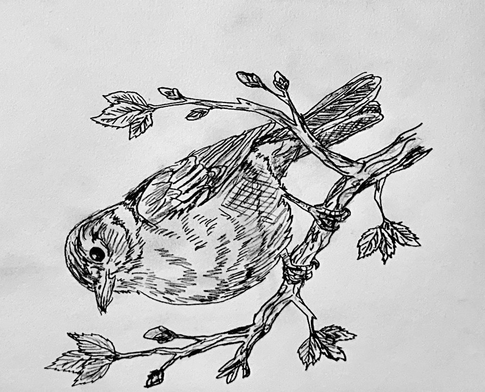
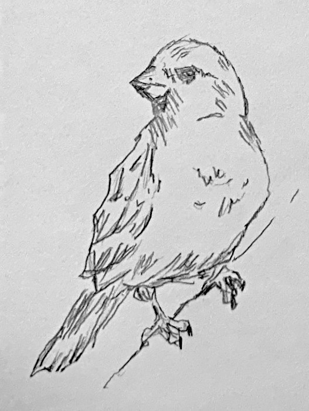
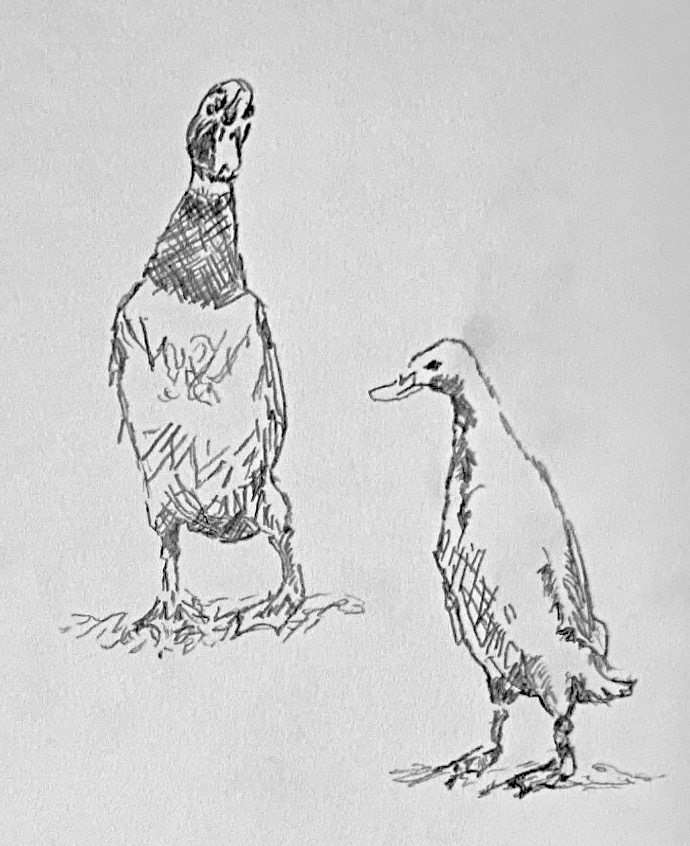
A charcoal series built around a deeply personal question: who am I, really? Every mark carries the weight of something real. This collection places every version of the truth on the same page without asking them to agree.

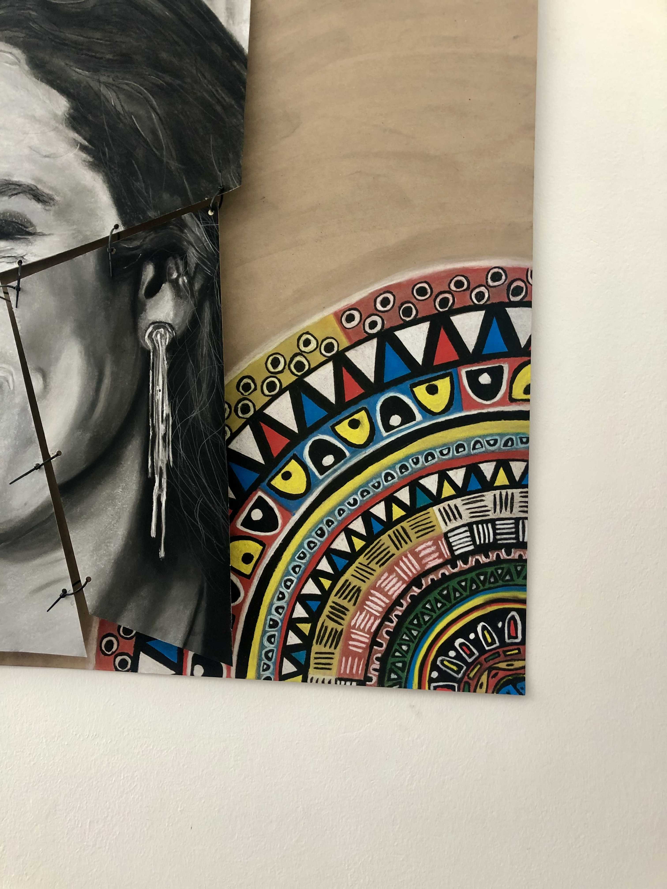
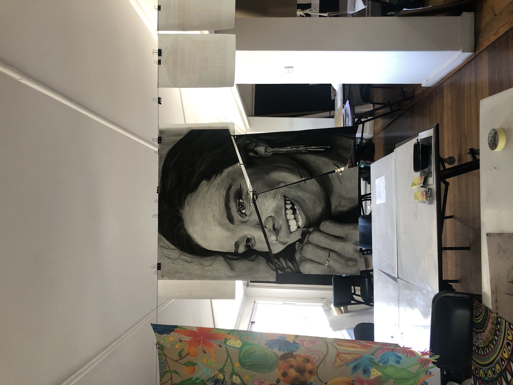
A charcoal series about what cannot yet be seen or named. The blank spaces are intentional, representing the gaps in self understanding we all carry and the quiet courage it takes to leave them open.


From cotton to denim to fashion to recycling. The journey is both immersive and complex. A fabric of grit. A symbol of resilience and wear. Every crease, rip, and thread tells a story. A charcoal drawing tracing the journey of denim from cotton field to fashion to landfill. One of the world's most familiar fabrics, looked at closely enough to reveal the human story threaded all the way through it.
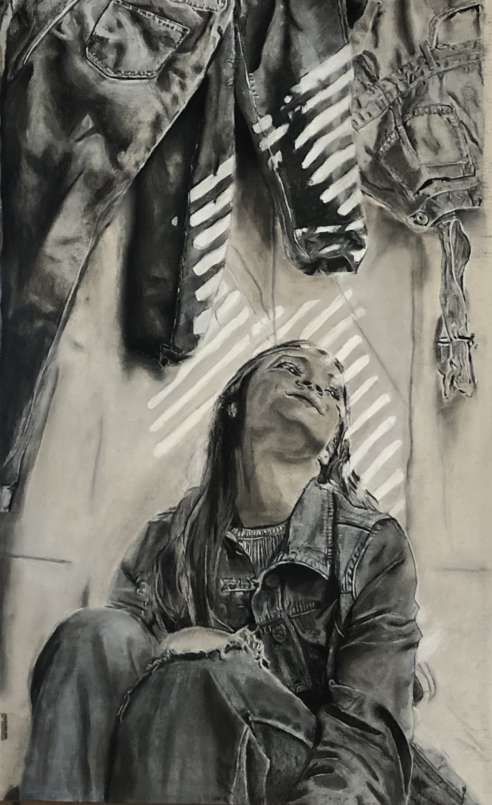

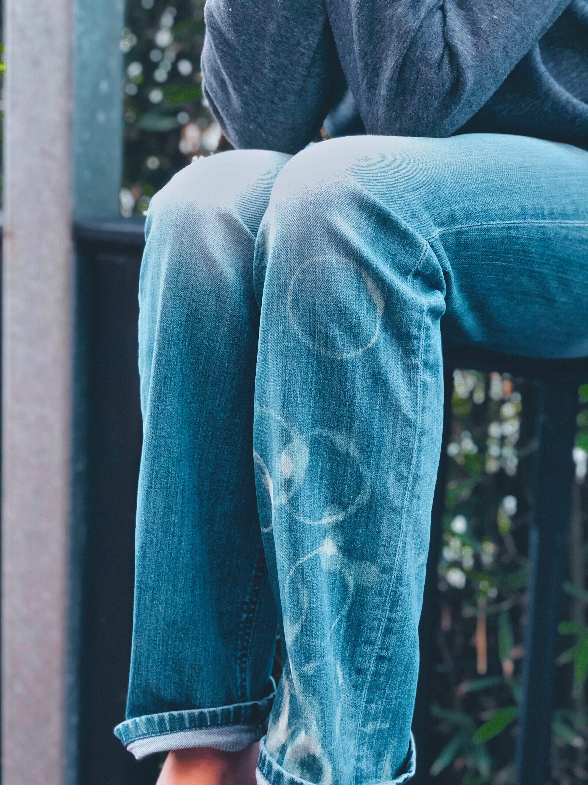
Charcoal portrait of my grandmother, drawn with love and made as a permanent act of gratitude. Less about capturing a face and more about capturing a feeling, of warmth, of safety and of a love too large to put into words.

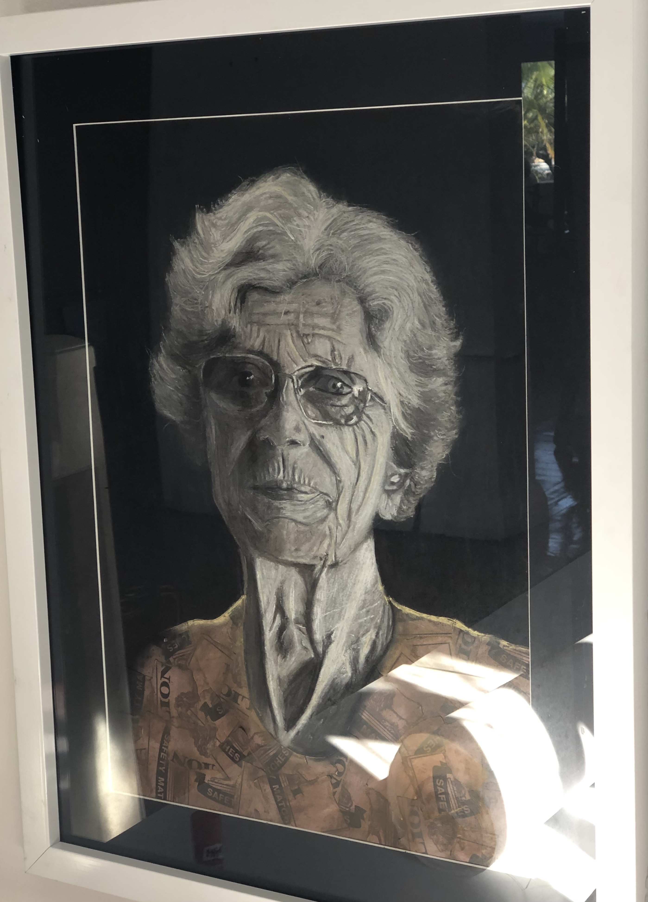
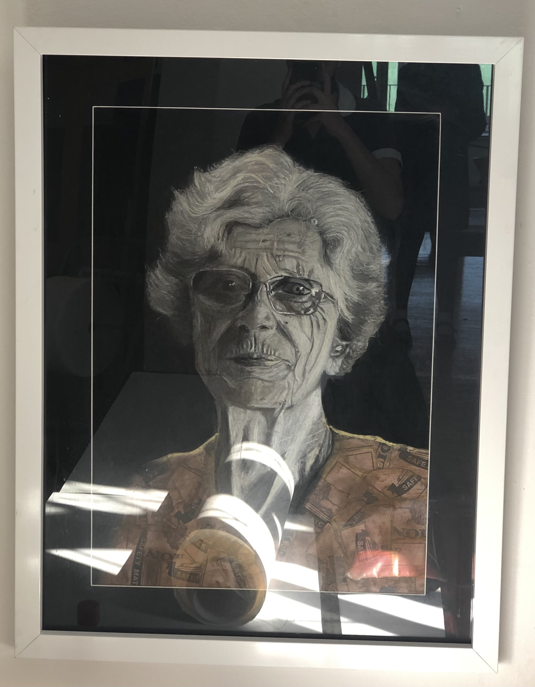
A multi medium self portrait series made during a period of genuine searching. Each piece captures a different version of the same person, uncertain, evolving and refusing to be reduced to a single story.

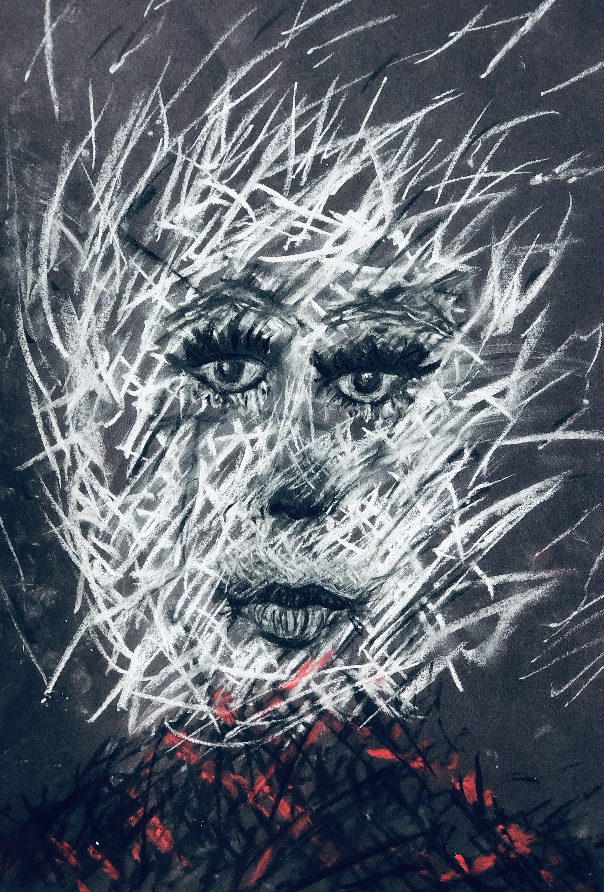
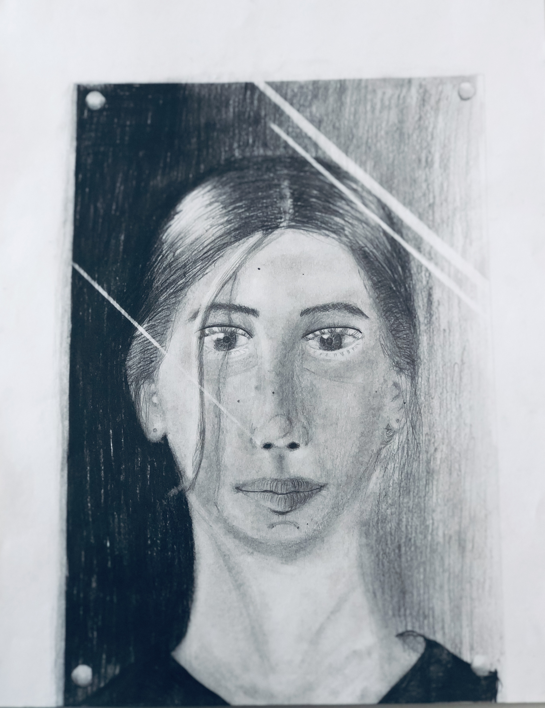